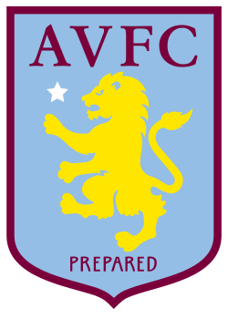
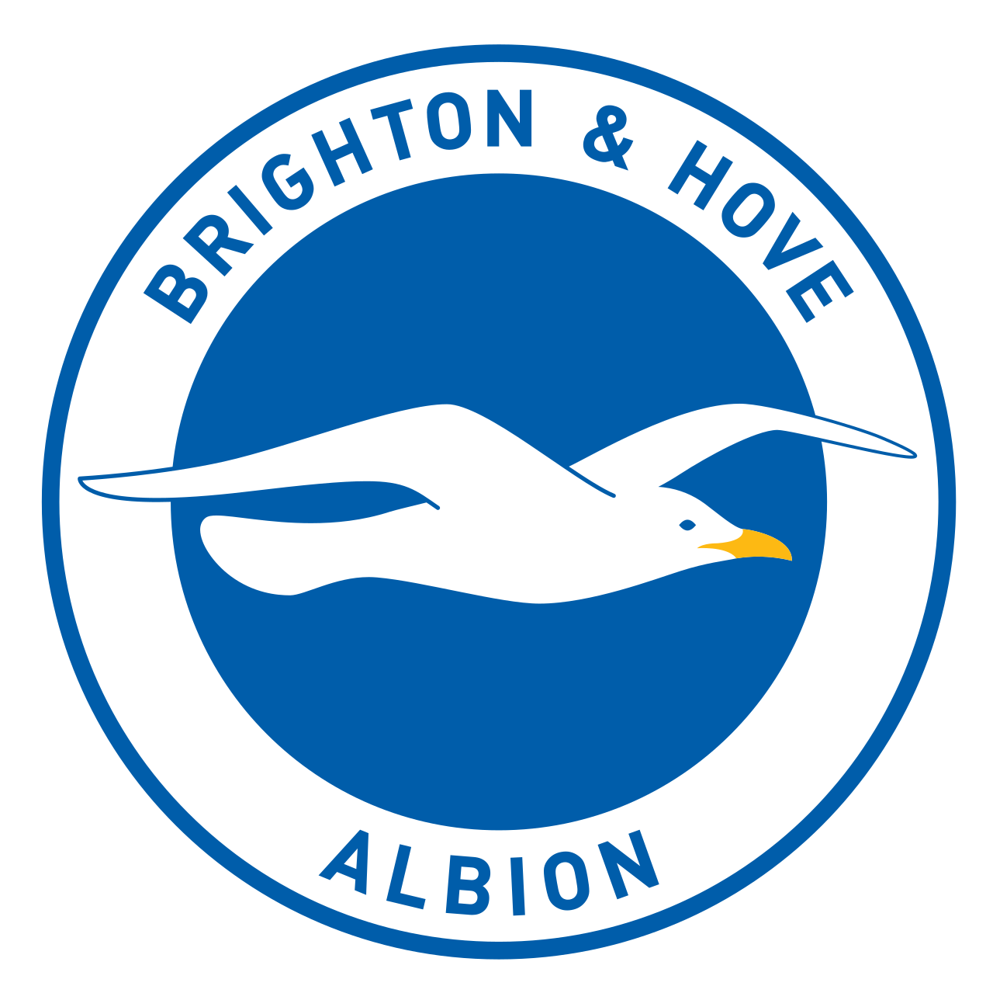
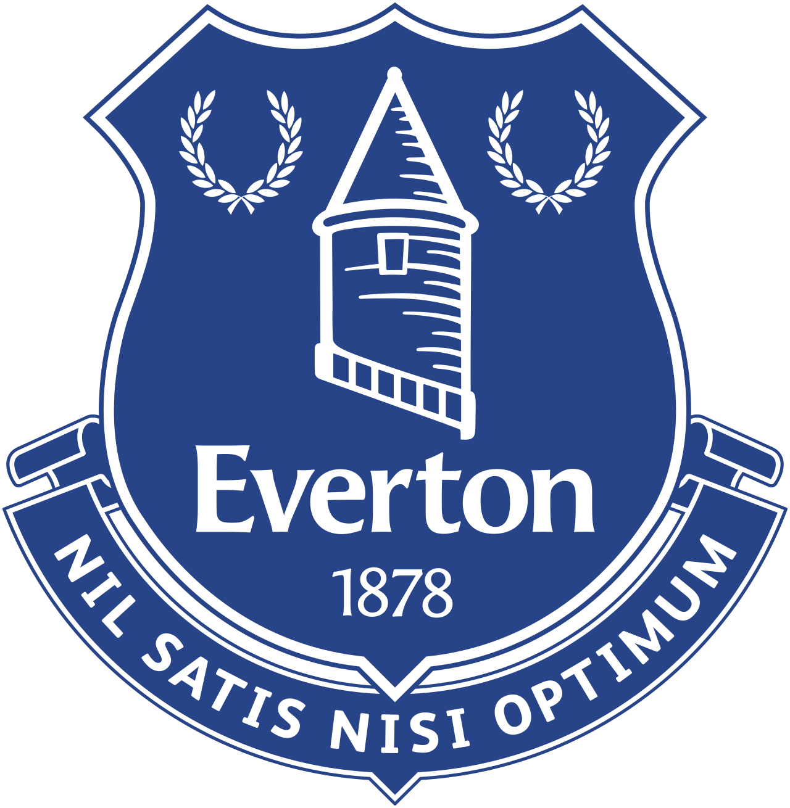
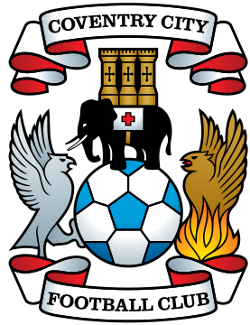
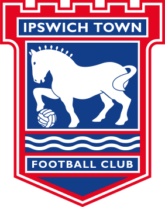

DATOS DEL CAMPEÓN
- Títulos totales: 14
- Rendimiento: 74.5%
- Goles a Favor: 88
- Vallas Invictas: 16
MÁXIMOS GOLEADORES
- 1. E. Haaland (MCI): 27 Goles
- 2. B. Saka (ARS): 21 Goles
- 3. M. Salah (LIV): 19 Goles
| Club | PJ | G | E | D | DG | Pts | |
|---|---|---|---|---|---|---|---|
| 1 | Arsenal | 38 | 26 | 7 | 5 | 39 | 85 |
| 2 | 38 | 23 | 7 | 5 | 32 | 61 | |
| 3 |  Manchester United Manchester United | 38 | 20 | 9 | 6 | 13 | 54 |
| 4 |  Aston Villa | 38 | 19 | 6 | 9 | 3 | 51 |
| 5 |  Liverpool Liverpool | 38 | 17 | 7 | 9 | 9 | 49 |
| 6 |  Bournemouth Bournemouth | 38 | 13 | 9 | 8 | -2 | 48 |
| 7 | 38 | 10 | 10 | 10 | -5 | 40 | |
| 8 |  Brighton | 38 | 10 | 10 | 10 | 3 | 40 |
| 9 |  Brentford Brentford | 38 | 13 | 18 | 7 | 4 | 45 |
| 10 |  Chelsea Chelsea | 38 | 9 | 14 | 11 | 18 | 41 |
| 11 | .svg) Fulham Fulham | 38 | 12 | 5 | 13 | -3 | 41 |
| 12 |  Everton | 38 | 12 | 7 | 11 | -1 | 43 |
| 13 | 38 | 12 | 7 | 11 | -1 | 43 | |
| 14 | 38 | 10 | 9 | 11 | -2 | 39 | |
| 15 | 38 | 7 | 11 | 12 | -11 | 32 | |
| 16 |  Tottenham Tottenham | 38 | 7 | 9 | 14 | -7 | 30 |
| 17 | 38 | 7 | 8 | 15 | -15 | 29 | |
| 18 | 38 | 7 | 8 | 15 | -19 | 29 | |
| 19 | 38 | 4 | 8 | 18 | -26 | 20 | |
| 20 |  Wolves Wolves | 38 | 3 | 8 | 20 | -30 | 17 |
ASCENDIDOS 2026/27

Coventry City
Ipswich TownDATOS DE TEMPORADA
- Partidos Jugados: 380
- Goles Totales: 1,084
- Promedio Goles: 2.85
- Bota de Oro: E. Haaland (27)
ASISTENCIAS Y PORTEROS
- K. De Bruyne (MCI): 15 Asist.
- M. Ødegaard (ARS): 12 Asist.
- David Raya (ARS): 16 Imbat.